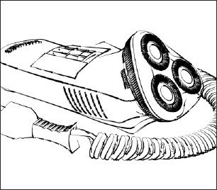

Hand Drawn

 Hand Drawn makes your model look like it was drawn by hand, with individual strokes.
Hand Drawn makes your model look like it was drawn by hand, with individual strokes.
The parameters available to you are:
-
Outline Color — the color of the lines in the model
-
Outline Width — the width of the lines in the model; from Thin to Thick
-
Line Deviation — controls the straightness of the lines; from True to Wobbly
-
Line Regularity — controls the smoothness of the lines; from Smooth to Jagged
-
Line Taper — controls how the lines taper from beginning to end; from Least to Most